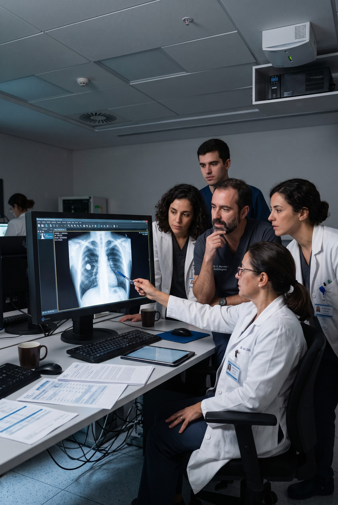

Casos críticos não são priorizados
Exames alarmantes podem permanecer na mesma fila dos casos de rotina.

IA para Saúde
O PrioScan utiliza inteligência artificial para identificar a gravidade clínica em radiografias de tórax e ajudar a priorizar os casos que precisam de atenção imediata.
Fale com o nosso time ↗Desenvolvido pela NeuralMind.AI e pelo HCPA, com financiamento da FINEP.

O problema
Em uma fila convencional, um paciente com um quadro crítico pode aguardar atrás de dezenas de exames de rotina até que a radiografia seja analisada. Quando a urgência não é identificada rapidamente, o diagnóstico e o início do tratamento também podem ser adiados.
Exames alarmantes podem permanecer na mesma fila dos casos de rotina.
Quanto maior a espera pela avaliação, maior pode ser o tempo até o início da conduta médica.
A demora pode contribuir para complicações e aumentar o tempo de permanência hospitalar.
O PrioScan analisa os exames e indica a prioridade clínica para que casos potencialmente mais graves sejam avaliados primeiro, mantendo a decisão médica com o profissional.
A solução utiliza uma escala de severidade desenvolvida com especialistas em pneumologia e cirurgia torácica para avaliar a gravidade do quadro, e não apenas a presença ou ausência de um achado.
O PrioScan sinaliza a prioridade do exame. A interpretação clínica, o diagnóstico e a decisão final continuam sob responsabilidade dos profissionais de saúde.
Casos alarmantes podem ser posicionados no topo da fila do radiologista, permitindo que recebam atenção mais rapidamente.
de 19h48 para 45 minutos
Resultado observado na operação do PrioScan no Hospital de Clínicas de Porto Alegre (HCPA).


A NeuralMind é uma DeepTech fundada em 2017 dedicada a transformar a eficiência operacional das empresas através de Inteligência Artificial de ponta.
Desenvolvemos aplicações com informações confiáveis para que seu time e seus clientes possam usar sem medo.
Nosso time conta com diversos pesquisadores em IA, garantindo que nossos produtos adotem sempre o que há de mais novo na tecnologia.
Automatizamos tarefas repetitivas para que você e o seu time foquem em atividades mais estratégicas que realmente agregam valor ao negócio.
Nascida da pesquisa acadêmica com base tecnológica sólida. Carregamos no DNA a inovação e o rigor científico de uma das principais universidades da América Latina.